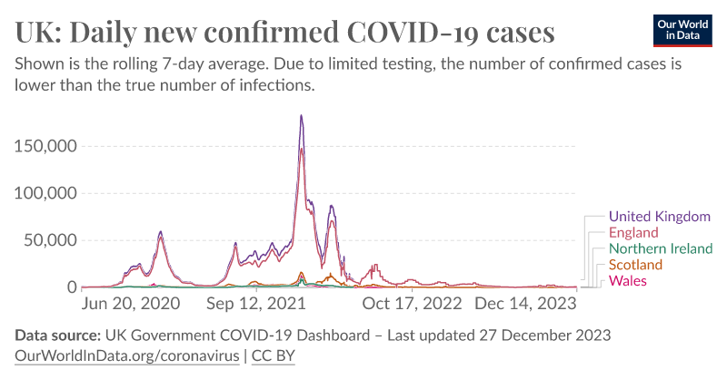
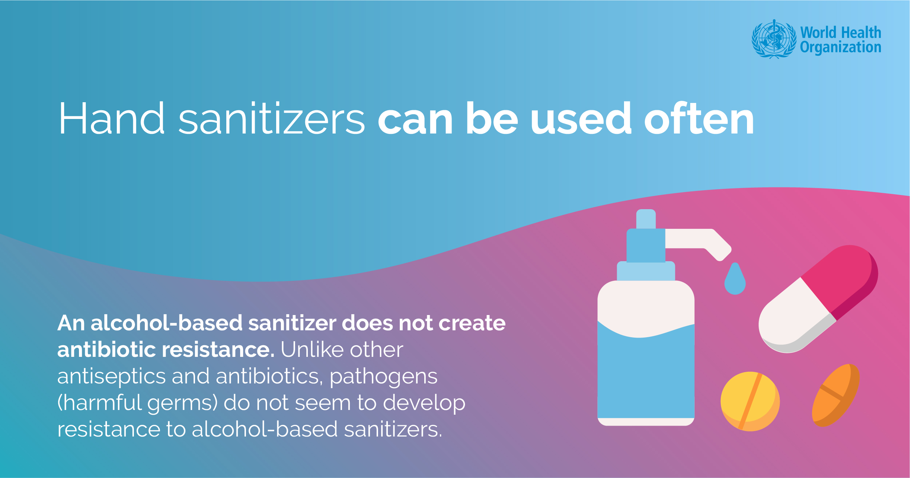
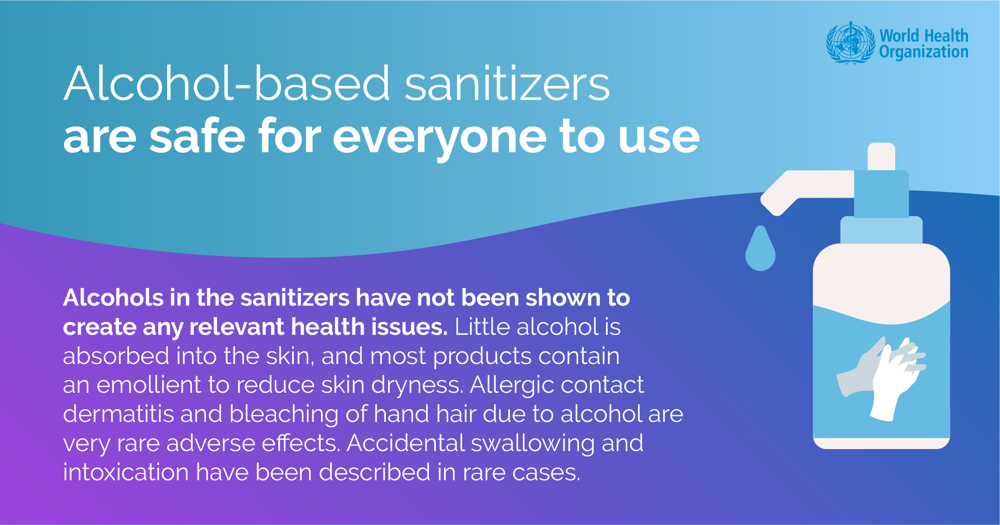
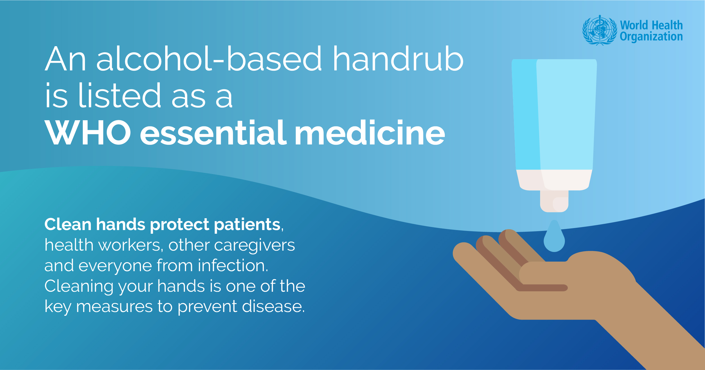
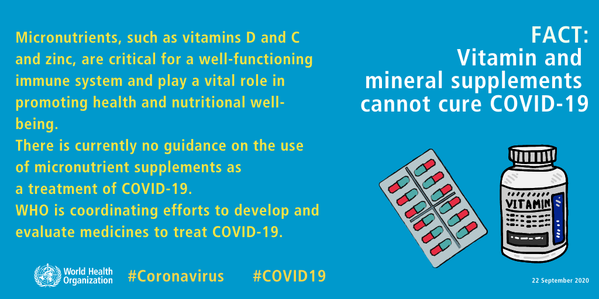

CORONA VIRUS:
Coronavirus disease 2019 (COVID-19) was first reported in Wuhan, China, in 2019, and subsequently spread globally to become the fifth documented pandemic since the 1918 flu pandemic.
By September 2021, almost two years after COVID-19 was first identified, there had been more than 200 million confirmed cases and over 4.6 million lives lost to the disease. Here, we take an in-depth look at the history of COVID-19 from the first recorded case to the current efforts to curb the spread of the disease with worldwide vaccination programs.
Some viruses, mutation rates may be as high as 10−3 to 10−4 per incorporated nucleotide
Precautions:
Wear a mask when going out. During hot days, be careful from heat stroke and remove your mask when you are outdoors and 2 meters away from other people.
During COVID-19 pandemic situation. Our results revels that 10%, 15% and 17% of higher H20 consumption per day in rural, urban and peri-urban residential respectively.
Advantages (Positive Aspects):
- Advancements in Medical Research:
- Telecommuting and Remote Work:
- Digital Transformation:
- Public Health Preparedness:
Here Some Important Points Related To COVID-19:
- Rapid development of COVID-19 vaccines.
- Accelerated research in virology and immunology.
- Increased flexibility for employees.
- Adoption of remote work technologies.
- Accelerated adoption of digital technologies.
- Innovation in online services and e-commerce.
- Increased focus on strengthening public health infrastructure.
- Improved global cooperation in pandemic response.
- Environmental Impact:
- Temporary reduction in pollution and carbon emissions during lockdowns,increased awareness of the environmental impact of human activities.
- Remote Learning Opportunities:
-
Accelerated development and adoption of online educational resources,Access to educational content for remote or disadvantaged populations.
- Vulnerable Populations:
- Disproportionate impact on vulnerable and marginalized populations.
- Exacerbation of existing social and economic inequalities.
Number of COVID-19 cases reported to WHO:

FACT: Hand sanitizers can be used often
An alcohol-based sanitizer does not create antibiotic resistance. Unlike other antiseptics and antibiotics, pathogens (harmful germs) do not seem to develop resistance to alcohol-based sanitizers.

FACT: Alcohol-based sanitizers are safe for everyone to use
Alcohols in the sanitizers have not been shown to create any relevant health issues. Little alcohol is absorbed into the skin, and most products contain an emollient to reduce skin dryness. Allergic contact dermatitis and bleaching of hand hair due to alcohol are very rare adverse effects. Accidental swallowing and intoxication have been described in rare cases.

FACT: The amount of alcohol-based sanitizer you use matters
Apply a palmful of alcohol-based sanitizer to cover all surfaces of your hands. Rub your hands together using the right technique until they are dry.
The entire procedure should last 20-30 seconds.

FACT: An alcohol-based handrub is listed as a WHO essential medicine
Clean hands protect patients, health workers, other caregivers and everyone from infection. Cleaning your hands is one of the key measures to prevent disease.

FACT: Vitamin and mineral supplements cannot cure COVID-19
Micronutrients, such as vitamins D and C and zinc, are critical for a well-functioning immune system and play a vital role in promoting health and nutritional well-being. There is currently no guidance on the use of micronutrient supplements as a treatment of COVID-19.
WHO is coordinating efforts to develop and evaluate medicines to treat COVID-19.

For More Information:
- Additional Information
- About Us